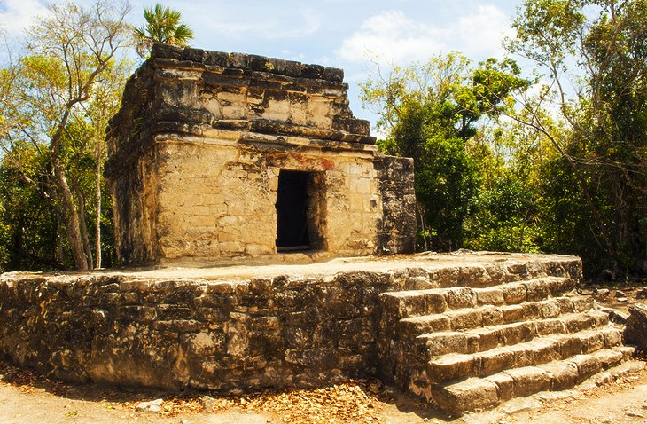
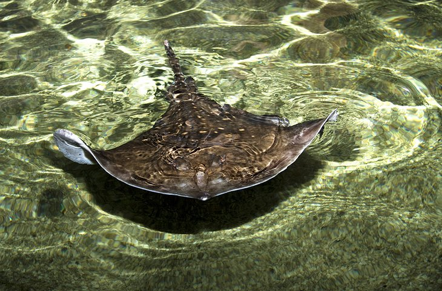

Contact Information
Email: contactus@scoots.com
Call Us: 888-555-2323
.webp)
.webp)
.webp)

The island is extremely popular as a destination for snorkelers and scuba divers, who are spoilt for choice when it comes to choosing which lovely reef to explore.One of the best spots to dive is the Palancar Reef, rising from depths of up to 80 meters to shallows just beneath the surface of the sea at the southwest end of the island. A popular dive includes a large bronze figure of Christ placed some 17 meters underwater.

More than 30 Mayan sites have been found on Cozumel, some of them in beautiful locations such as dense jungle or perched above pristine beaches. By far the most important is that of San Gervasio, built in AD 800 and located 16 kilometers from San Miguel de Cozumel. Highlights of a visit include seeing the Temple of Ix-chel, for centuries the focal point of the island's religious life and a place of pilgrimage from across the Mayan empire.
Particularly popular among cruise ship passengers during their Cozumel stopover, Discover Mexico Park Cozumel is one of the newest attractions on the island. In addition to providing an interesting overview of Mexico's many diverse cultures, highlights include miniature reconstructions of many of the country's most important archaeological sites and historic attractions. Also of interest are the exhibits and multi-media shows showcasing traditional music, art, and food—including a chance to sample locally made chocolate—along with displays of traditional dances. A fascinating sight is the daring Danza de los Voladores (Dance of the Flyers) involving participants throwing themselves off a 30-meter-tall pole as they spin and twirl to the ground via ropes attached to their feet.
Thanks to its coral reefs and crystal clear waters, there's no shortage of fun wildlife encounters on Cozumel. One of the best is Stingray Beach, an attraction offering some up-close time with one of the most mysterious of marine creatures. Highlights include a guided swim with stingrays in the facility's enclosed bays where you'll learn many fascinating facts about these passive beasts, including a chance to feed and touch them.
Email: contactus@scoots.com
Call Us: 888-555-2323